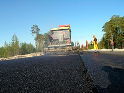

Щебеночномастичный асфальтобетон
Мелкозернистый
базальной
структуры
применяют для
верхнего слоя
двухслойных
покрытий при
интенсивном
движении.
Асфальтобетон
этого типа
обладает
достаточно
высокой
сопротивляемостью
устройства
механическим
воздействиями
атмосферным
факторам.

Крупнозернистый
пористый асфальтобетон
Крупнозернистый
асфальтобетон
контактной
структуры
применяют для
устройства
нижнего слоя
покрытия,
шероховатая и
пористая
поверхность
которого
обеспечивает
хорошее
сцепление с
верхним
слоем.
Черный щебень
Битумные смеси
представляют
собой материал,
приготовленный
путем смешения в
смесительных
установках в
нагретом
состоянии
щебеночных
(гравийных)
материалов,
природного или
дробленого
песка,
минерального
порошка и
битума, взятых в
определенных
соотношениях.в
верхних слоях
дорожной
одежды.
Фракционный
щебень
Слои из
песчано-гравийных
смесей
используют в
большинстве
случаев в
качестве
конструктивных
слоев дорожной
одежды дорог
низких
категорий. Также
используют как
дренажные
основания для
дорог разных
категорий. Эти
слои по
прочности
значительно
уступают слоям
из каменных
материалов и
асфальтовым
бетонам, что
облегчает их
использование в
верхних слоях
дорожной
одежды.
Песок
Песчаные слои
широко
применяются в
качестве
оснований
дорожных одежд.
Прочность и
дренирующая
способность
слоев из песка
зависят от их
гранулометрического
состава. Крупные
пески имеют
большие модули
упругости и
деформации и
большие значения
коэффициента
фильтрации